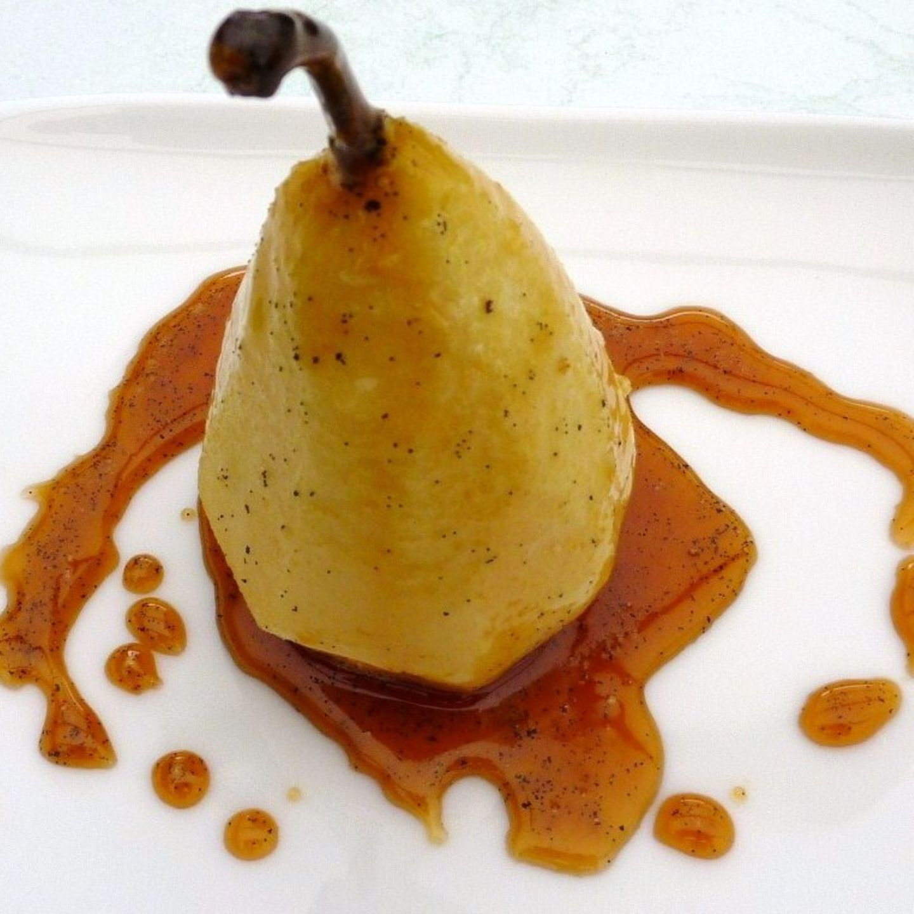

Marsala Caramel Pears

Pears coated in caramel made with Marsala
An easy to make, yet delicious snack, or dessert.
It also is perfect for a combination with some white wine and Roquefort.
Ingredients:
- Williams Pears
- 1 lemon
- 250ml of Marsala
- 200g of sugar
- some cinnamon
- 50g of butter
- Willliams spirit
Step by step
Peel the pears and grate a bit of the lemon zest:
Wash the fruits, and then peel the pear.
Take some grates off the zest of the lemon.Cook up the wine:
Cook up the Marsala together with 100g of the sugar,
the grates of the lemon and a small amount of cinnamon.Add the pears:
Let them steep for 10 minutes, then take them out.Caramel:
Caramelize all of the sugar left, then deglaze it with the Williams spirit and the wine sauce.Put the pears in:
Finally put the pears to the caramel and make sure they are fully coated in it.Serve